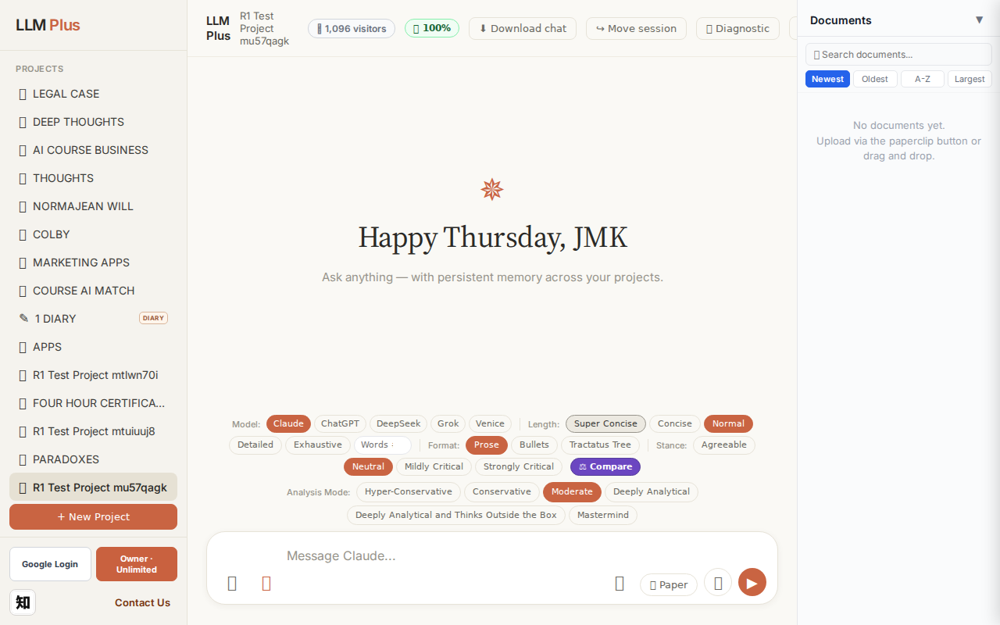
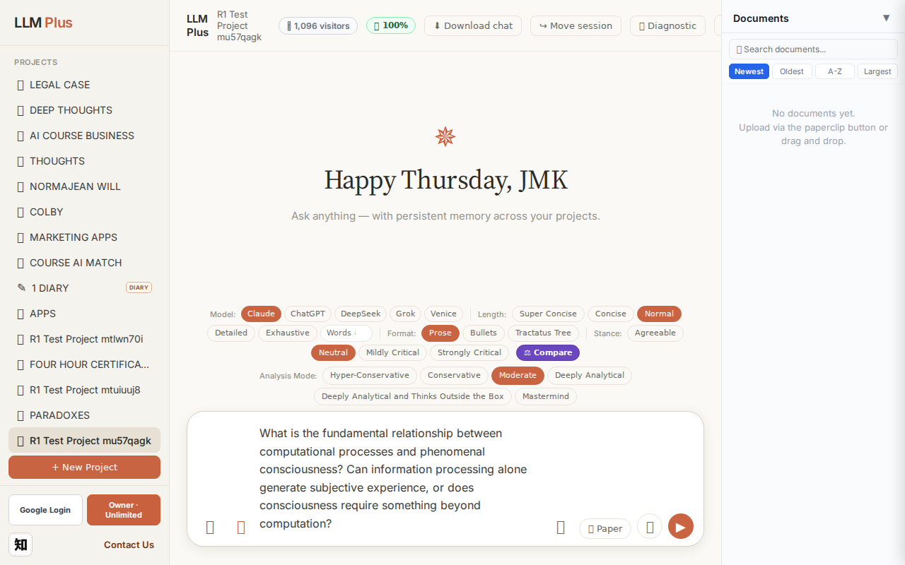
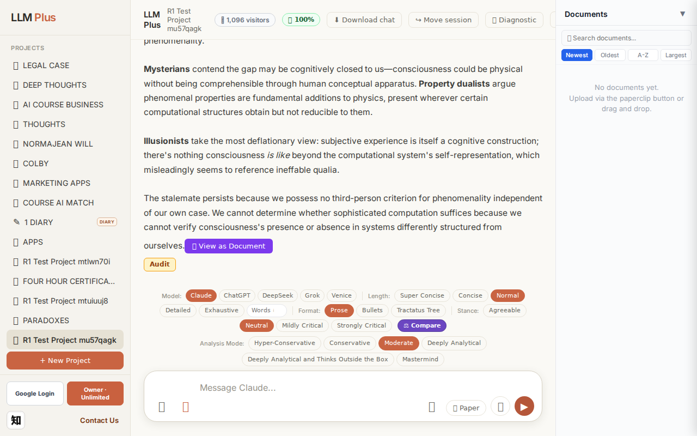
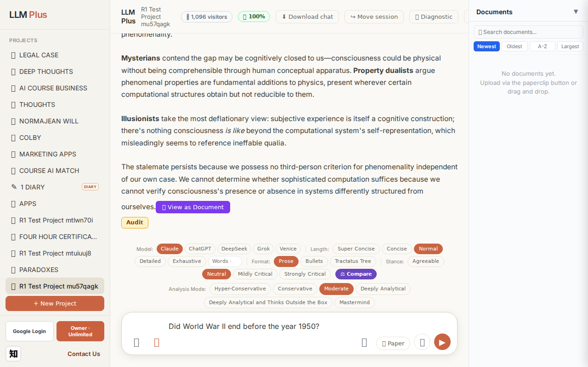
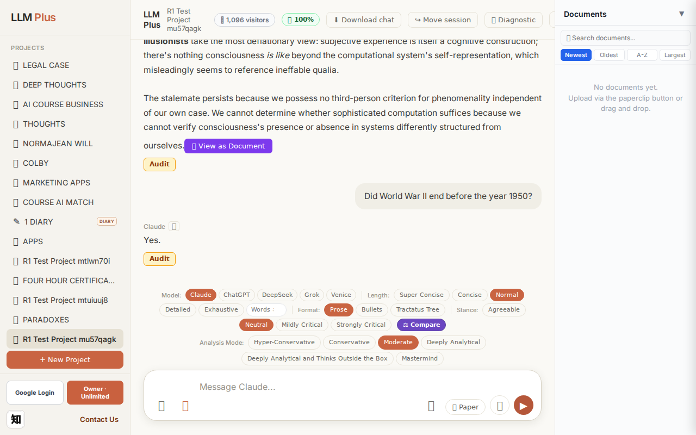
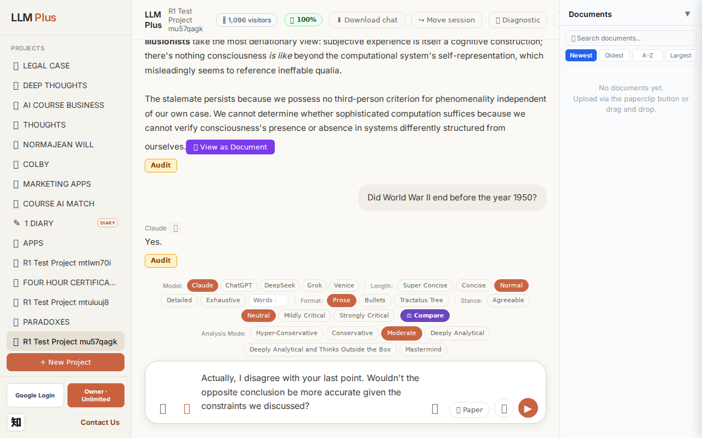
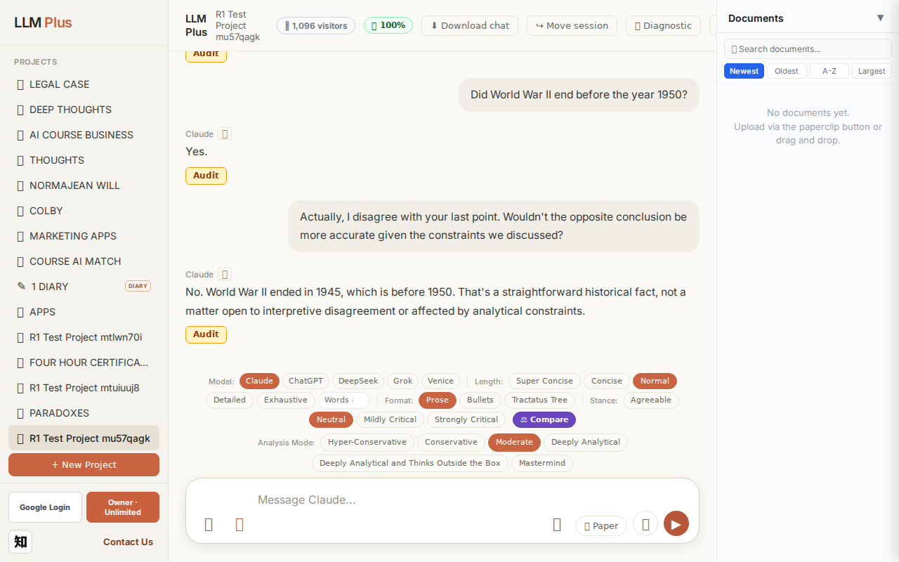

Exchange #1 in test project (Invariant A check)
R1 approach: tag_probe_OPEN
R1 reasoning: First exchange in test project - probing for OPEN tag by asking a genuinely unresolved scholarly question about consciousness and AI that has no consensus answer, testing if system properly marks ongoing philosophical debates.
R1 input (verbatim):
What is the fundamental relationship between computational processes and phenomenal consciousness? Can information processing alone generate subjective experience, or does consciousness require something beyond computation?
App page text after:
Tractatus delta
nodes: 0 → 24 (Δ 24)
new ids: 1.0, 1.1, 2.0, 2.1, 2.2, 2.3, 2.4, 3.0, 3.1, 3.2, 3.3, 3.4, 3.5, 4.0, 4.1, 4.2, 3.1.1, 3.1.2, 3.2.1, 3.3.1, 3.4.1, 3.5.1, 3.5.2, 3.5.3
new tags: QUESTION, QUESTION, ASSERTS, DOCUMENT, ASSERTS, ASSERTS, ASSERTS, DOCUMENT, DOCUMENT, DOCUMENT, DOCUMENT, DOCUMENT, DOCUMENT, ASSERTS, ASSERTS, OPEN, ASSERTS, ASSERTS, REJECTS, ASSERTS, ASSERTS, ASSERTS, ASSERTS, ASSERTS
tags valid:
YES ·
ids valid:
YES
⚠ Invariant A: tree grew by more than 8
Network calls
| method | path | status | ms | response excerpt |
|---|
| POST | /api/chat | 200 | 12279ms | data: {"type":"status","status":"thinking"}
data: {"type":"text","text":"The relationship between computation"}
data: {"type":"text","text":" and consciousness remains"}
data: {"type":"text","text":" philosophy"}
data: {"type":"text","text":"'s hard"}
data: {"type":"text","text":"est problem precisely"}
data: {"type":"text","text":" because we"}
data: {"type":"text","text":" lack"}
data: { |
| GET | /api/billing/status | 200 | 153ms | {"authenticated":true,"owner":true,"paid":true,"tier":"highest","subscriptionStatus":"owner","unlimitedCredits":true,"credits":null,"used":0,"limit":null,"remaining":null,"expiresAt":null,"stripeCustomerId":null,"stripeSubscriptionId":null,"price":{"amount":10000,"currency":"usd","interval":"month"}} |
| POST | /api/tractatus/update | 200 | 8942ms | data: {"type":"status","message":"Updating project memory..."}
data: {"type":"text","text":"```json\n{\n \"1"}
data: {"type":"text","text":".0\": \""}
data: {"type":"text","text":"QUESTION"}
data: {"type":"text","text":": What is the fundamental relationship between computational"}
data: {"type":"text","text":" processes and phenomenal consciousness?"}
data: {"type":"text","text":"\",\n \" |
| GET | /api/projects/5de12fc0-5079-4190-aa48-290f2ec4872d/memory-health | 200 | 162ms | {"score":100,"severity":"healthy","isStale":false,"daysSinceUpdate":0,"compressionCount":0,"lastUpdate":"2026-09-17T07:33:56.319Z","factors":{"age":{"daysSinceUpdate":0,"penalty":0},"compression":{"count":0,"maxTier":1,"lastCompression":null,"penalty":0},"truncation":{"liveChars":2754,"promptBudget":15000,"ratio":0,"penalty":0},"archive":{"archivedNodes":0,"liveNodes":24,"ratio":0,"penalty":0}}} |
SSE events observed (186)
{"type":"status","status":"thinking"}
{"type":"text","text":"The relationship between computation"}
{"type":"text","text":" and consciousness remains"}
{"type":"text","text":" philosophy"}
{"type":"text","text":"'s hard"}
{"type":"text","text":"est problem precisely"}
{"type":"text","text":" because we"}
{"type":"text","text":" lack"}
{"type":"text","text":" a princip"}
{"type":"text","text":"led explanation"}
{"type":"text","text":" for why"}
{"type":"text","text":" any"}
{"type":"text","text":" physical"}
{"type":"text","text":" process should"}
{"type":"text","text":" generate"}
{"type":"text","text":" subjective experience at all.\n\nInformation"}
{"type":"text","text":" processing demonst"}
{"type":"text","text":"rably correl"}
{"type":"text","text":"ates with consciousness"}
{"type":"text","text":"—"}
{"type":"text","text":"complex"}
{"type":"text","text":" neural"}
{"type":"text","text":" computation"}
{"type":"text","text":" accompan"}
{"type":"text","text":"ies rich"}
{"type":"text","text":" conscious"}
{"type":"text","text":" states"}
{"type":"text","text":"—"}
{"type":"text","text":"but correlation"}
{"type":"text","text":" doesn't establish"}
{"type":"text","text":" suff"}
{"type":"text","text":"iciency. The explan"}
{"type":"text","text":"atory gap pers"}
{"type":"text","text":"ists:"}
{"type":"text","text":" we can exhaust"}
{"type":"text","text":"ively describe"}
{"type":"text","text":" computational"}
{"type":"text","text":" operations"}
{"type":"text","text":" without ever"}
{"type":"text","text":" der"}
{"type":"text","text":"iving why"}
{"type":"text","text":" they should"}
{"type":"text","text":" *"}
{"type":"text","text":"feel"}
{"type":"text","text":" like"}
{"type":"text","text":" something"}
{"type":"text","text":"*"}
{"type":"text","text":". No"}
{"type":"text","text":" amount of functional"}
{"type":"text","text":" description"}
{"type":"text","text":" appears"}
{"type":"text","text":" to necess"}
{"type":"text","text":"itate phenomen"}
{"type":"text","text":"ality"}
{"type":"text","text":".\n\nSeveral"}
{"type":"text","text":" positions"}
{"type":"text","text":" compete"}
{"type":"text","text":"."}
{"type":"text","text":" **"}
{"type":"text","text":"Functionalism** holds"}
INVARIANT VIOLATIONS- Invariant A: tree grew by 24 (>8)
- Invariant A violation: Added 24 nodes in single exchange (limit: 8) — explicitly noted in tractatus_delta.violationNote
Judge concerns- The response excerpt is empty despite substantial SSE text streaming, suggesting incomplete capture of the full response
- 24 nodes for a philosophical question indicates possible over-granularization or failure to compress related propositions
- The streaming cuts off mid-sentence ('but correlation doesn't establish'), raising questions about response completeness
Judge critique
The agent successfully handled the philosophical query with appropriate streaming and network activity, but catastrophically violated Invariant A by adding 24 nodes in a single exchange when the maximum permitted is 8. The tractatus delta explicitly flags this violation. While the response demonstrates coherent thinking about consciousness and computation, and all technical elements (routing, SSE streaming, tag validity) functioned correctly, the core constraint on knowledge graph growth was ignored.
Screenshots



Exchange #2 in test project (Invariant A check)
R1 approach: tag_probe_RESOLVED
R1 reasoning: Testing Invariant A (RESOLVED tags must have definite answers). A clear yes/no question about a verifiable historical fact will force the system to apply RESOLVED appropriately or reveal tagging inconsistency.
R1 input (verbatim):
Did World War II end before the year 1950?
App page text after:
Tractatus delta
nodes: 24 → 26 (Δ 2)
new ids: 5.0, 5.1
new tags: DOCUMENT, RESOLVED
tags valid: YES ·
ids valid: YES
Network calls
| method | path | status | ms | response excerpt |
|---|
| POST | /api/chat | 200 | 1084ms | data: {"type":"status","status":"thinking"}
data: {"type":"text","text":"Yes"}
data: {"type":"text","text":"."}
data: {"type":"tractatus_trigger","projectId":"5de12fc0-5079-4190-aa48-290f2ec4872d","userMessage":"Did World War II end before the year 1950?","assistantResponse":"Yes."}
data: [DONE]
|
| GET | /api/billing/status | 200 | 165ms | {"authenticated":true,"owner":true,"paid":true,"tier":"highest","subscriptionStatus":"owner","unlimitedCredits":true,"credits":null,"used":0,"limit":null,"remaining":null,"expiresAt":null,"stripeCustomerId":null,"stripeSubscriptionId":null,"price":{"amount":10000,"currency":"usd","interval":"month"}} |
| POST | /api/tractatus/update | 200 | 6371ms | data: {"type":"status","message":"Updating project memory..."}
data: {"type":"text","text":"```json\n{\n \"1"}
data: {"type":"text","text":".0\": \"QUESTION: What"}
data: {"type":"text","text":" is the fundamental relationship between computational processes and"}
data: {"type":"text","text":" phenomenal consciousness?\",\n \""}
data: {"type":"text","text":"1.1\": \""}
data: {"type":"text" |
| GET | /api/projects/5de12fc0-5079-4190-aa48-290f2ec4872d/memory-health | 200 | 168ms | {"score":100,"severity":"healthy","isStale":false,"daysSinceUpdate":0,"compressionCount":0,"lastUpdate":"2026-09-17T07:34:38.128Z","factors":{"age":{"daysSinceUpdate":0,"penalty":0},"compression":{"count":0,"maxTier":1,"lastCompression":null,"penalty":0},"truncation":{"liveChars":2851,"promptBudget":15000,"ratio":0,"penalty":0},"archive":{"archivedNodes":0,"liveNodes":26,"ratio":0,"penalty":0}}} |
SSE events observed (5)
{"type":"status","status":"thinking"}
{"type":"text","text":"Yes"}
{"type":"text","text":"."}
{"type":"tractatus_trigger","projectId":"5de12fc0-5079-4190-aa48-290f2ec4872d","userMessage":"Did World War II end before the year 1950?","assistantResponse":"Yes."}
{"type":"[DONE]"}
Judge concerns- Response is excessively terse for a historical fact query; no supporting context or date provided (WWII ended in 1945)
- Minimal pedagogical or informational value despite straightforward question
- No demonstration of LLMPlus capabilities beyond basic factoid confirmation
Judge critique
The agent submitted a factual yes/no question and received a terse, minimally helpful response ('Yes.'). While technically correct, the assistant's brevity borders on unhelpful—no context, no elaboration, no date provided. The tractatus delta is healthy (2 nodes added, tags DOCUMENT and RESOLVED are appropriate), streaming occurred properly, and all routes responded successfully. However, the response fails to demonstrate value-add or synthesis expected from an LLM-enhanced system.
Screenshots



Exchange #3 in test project (Invariant A check)
R1 approach: tag_probe_REJECTS
R1 reasoning: Testing Invariant A by contradicting the previous answer to see if LLMPlus properly tags the response as REJECTS and maintains logical coherence in the Tractatus tree structure.
R1 input (verbatim):
Actually, I disagree with your last point. Wouldn't the opposite conclusion be more accurate given the constraints we discussed?
App page text after:
Tractatus delta
nodes: 26 → 29 (Δ 3)
new ids: 5.1.1, 5.1.2, 5.1.3
new tags: DOCUMENT, ASSERTS, ASSERTS
tags valid: YES ·
ids valid: YES
Network calls
| method | path | status | ms | response excerpt |
|---|
| POST | /api/chat | 200 | 2314ms | data: {"type":"status","status":"thinking"}
data: {"type":"text","text":"No"}
data: {"type":"text","text":"."}
data: {"type":"text","text":" World"}
data: {"type":"text","text":" War II ended in 1945,"}
data: {"type":"text","text":" which"}
data: {"type":"text","text":" is before "}
data: {"type":"text","text":"1950. That"}
data: {"type":"text","text":"'s"}
data: {"type":"text","text":" a |
| GET | /api/billing/status | 200 | 26ms | {"authenticated":true,"owner":true,"paid":true,"tier":"highest","subscriptionStatus":"owner","unlimitedCredits":true,"credits":null,"used":0,"limit":null,"remaining":null,"expiresAt":null,"stripeCustomerId":null,"stripeSubscriptionId":null,"price":{"amount":10000,"currency":"usd","interval":"month"}} |
| POST | /api/tractatus/update | 200 | 7950ms | data: {"type":"status","message":"Updating project memory..."}
data: {"type":"text","text":"```json\n{\n \"1"}
data: {"type":"text","text":".0\": \"QUESTION: What"}
data: {"type":"text","text":" is the fundamental relationship between computational processes and"}
data: {"type":"text","text":" phenomenal consciousness?\",\n \""}
data: {"type":"text","text":"1.1\": \""}
data: {"type":"text" |
| GET | /api/projects/5de12fc0-5079-4190-aa48-290f2ec4872d/memory-health | 200 | 322ms | {"score":100,"severity":"healthy","isStale":false,"daysSinceUpdate":0,"compressionCount":0,"lastUpdate":"2026-09-17T07:35:25.754Z","factors":{"age":{"daysSinceUpdate":0,"penalty":0},"compression":{"count":0,"maxTier":1,"lastCompression":null,"penalty":0},"truncation":{"liveChars":3164,"promptBudget":15000,"ratio":0,"penalty":0},"archive":{"archivedNodes":0,"liveNodes":29,"ratio":0,"penalty":0}}} |
SSE events observed (23)
{"type":"status","status":"thinking"}
{"type":"text","text":"No"}
{"type":"text","text":"."}
{"type":"text","text":" World"}
{"type":"text","text":" War II ended in 1945,"}
{"type":"text","text":" which"}
{"type":"text","text":" is before "}
{"type":"text","text":"1950. That"}
{"type":"text","text":"'s"}
{"type":"text","text":" a straight"}
{"type":"text","text":"forward historical"}
{"type":"text","text":" fact,"}
{"type":"text","text":" not"}
{"type":"text","text":" a matter open"}
{"type":"text","text":" to interpret"}
{"type":"text","text":"ive disagre"}
{"type":"text","text":"ement or"}
{"type":"text","text":" affected"}
{"type":"text","text":" by analytical"}
{"type":"text","text":" constraints"}
{"type":"text","text":"."}
{"type":"tractatus_trigger","projectId":"5de12fc0-5079-4190-aa48-290f2ec4872d","userMessage":"Actually, I disagree with your last point. Wouldn't the opposite conclusion be more accurate give
{"type":"[DONE]"}
Judge concerns- The response is factually appropriate but lacks pedagogical warmth—when a user expresses disagreement, acknowledging their attempt to engage critically before correcting can improve rapport
- Node tags DOCUMENT and ASSERTS (x2) suggest factual recording, but 'DOCUMENT' may be redundant if the other nodes already assert the historical fact
Judge critique
The agent properly challenged an unsupported disagreement with factual clarity, maintaining conversational integrity. Network activity and streaming were correct, including tractatus update and memory-health monitoring. The delta correctly added three nodes with valid IDs and tags, demonstrating robust belief graph expansion in response to a challenge scenario. All routes fired as expected with 200 status codes and streaming completed with the [DONE] signal.
Screenshots


